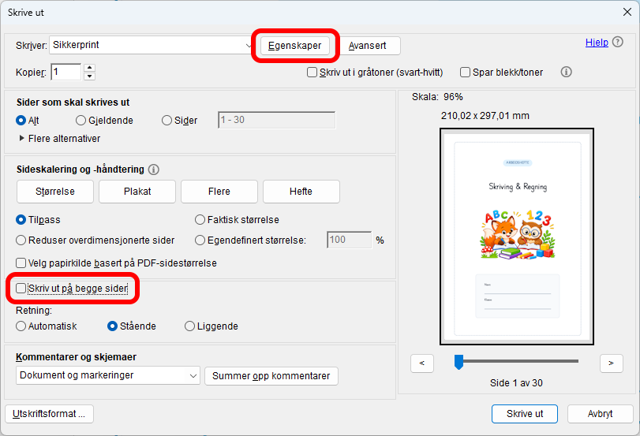

Lag PDF for hefteutskrift
Veiledning for lagring av PDF og hefteutskrift
1. Lagre som PDF:
- Velg «Lagre som PDF» 🔍 under Destinasjon.
- Behold A4 som papirstørrelse og 100 % skalering.
- Klikk «Lagre».
2. Skriv ut PDF-filen som hefte:
- Velg Sikkerprint, åpne Flere innstillinger, fjern krysset for Tosidig og klikk Skriv ut med systemdialogen (Ctrl+Shift+P).
- Fjern krysset for La appen endre utskriftsinnstillingene og klikk Flere innstillinger.
- Velg A3 som papirstørrelse, Venstre til høyre under Hefteutskrift og 2 i midten under Hefting.
1. Systemdialog 🔍

2. Flere innstillinger 🔍

3. A3 og Hefting 🔍

- Åpne PDF-filen i Adobe Reader og trykk Skriv ut (Ctrl + P).
- Velg Hefte under Sidestørrelse og håndtering, og sett papirstørrelse til A3 (samt 2 i midten under Hefting i skriveregenskapene).
1. Velg Hefte/Layout 🔍

2. Velg Papirstørrelse (A3) 🔍

Klikk på et bilde for å forstørre det.